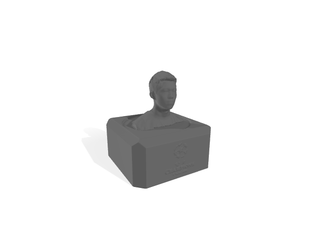

I used 3D Scanner to get an stl file of my head
Using Meshmixer to attach it to the champions league trophy stand.
Tried 3D printing resources from online database.
The above 3D printing objects can be ONLY made with subtraction.

Printed Champions League Trophy

Printed head of Tim Chen